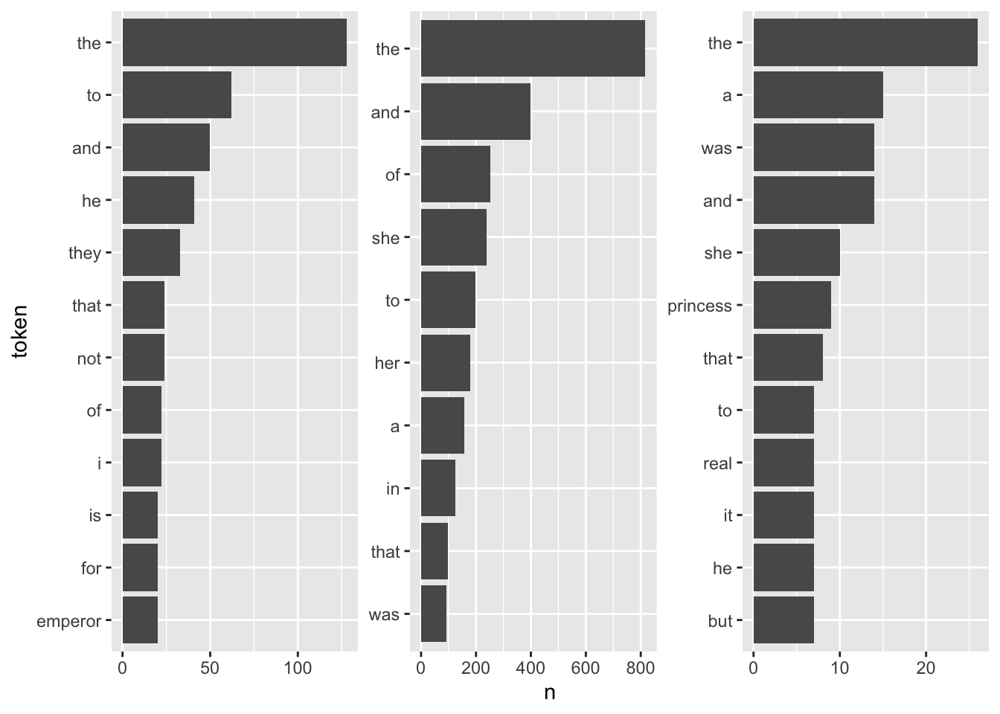
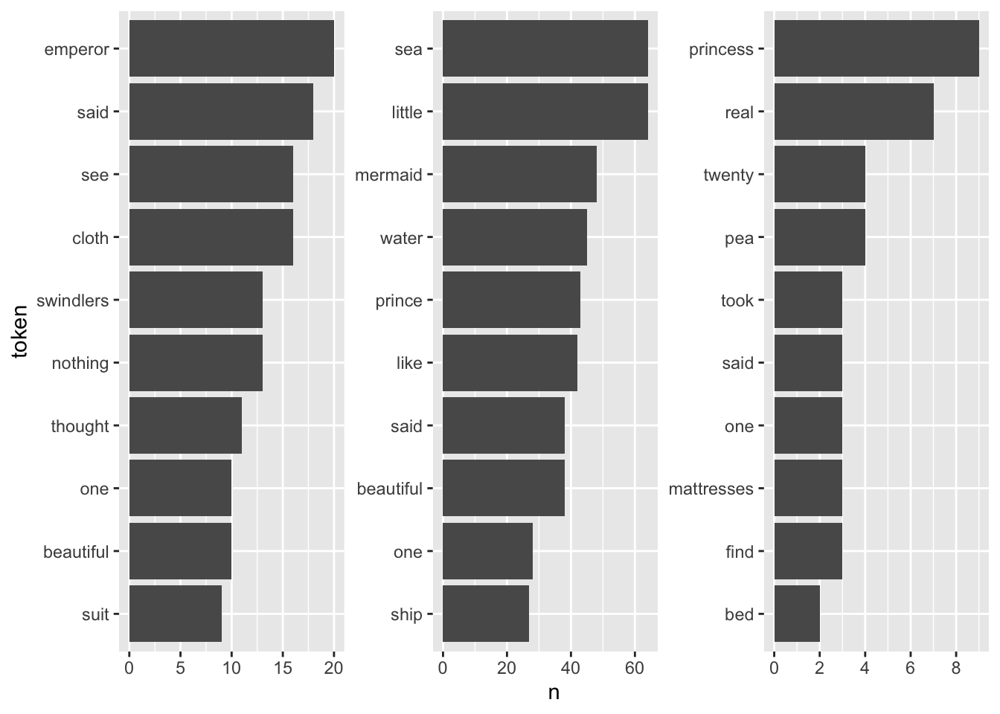
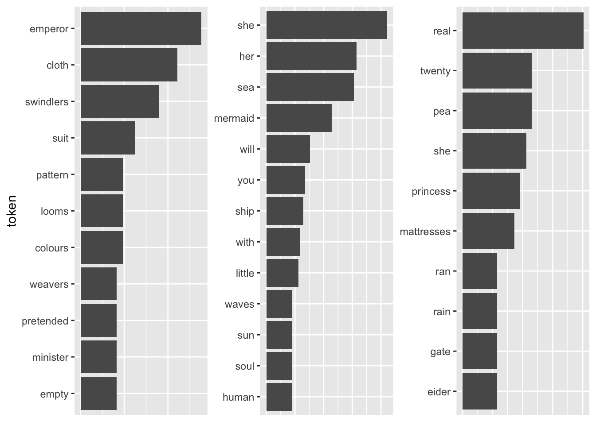
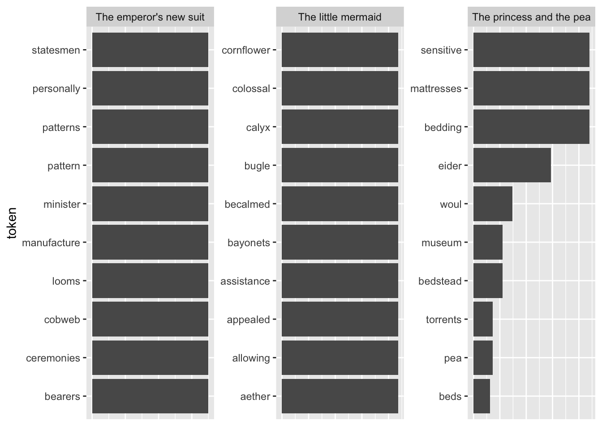
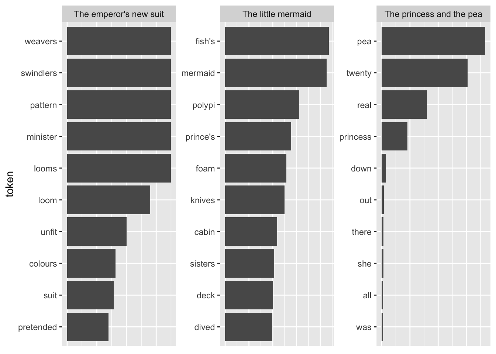
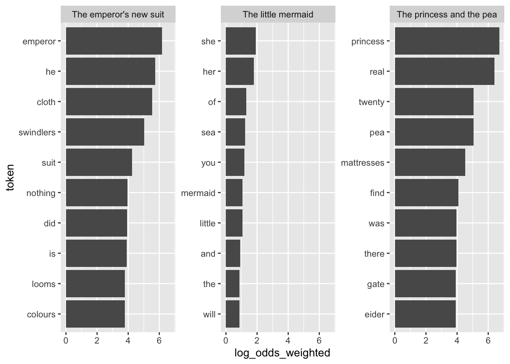
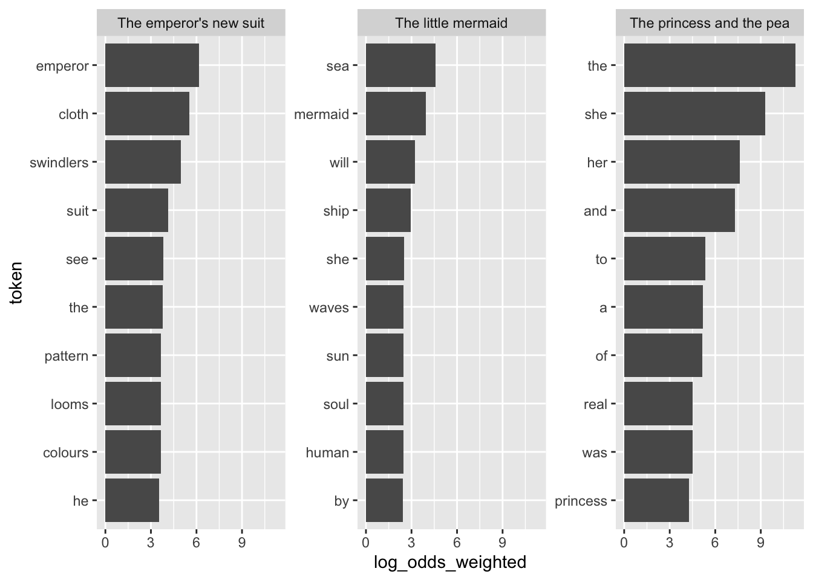
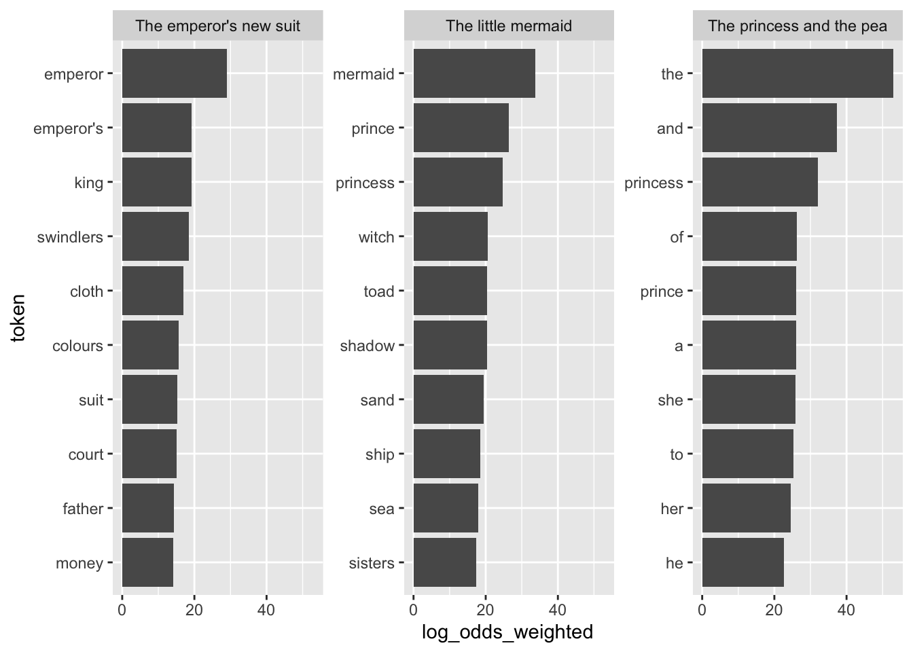
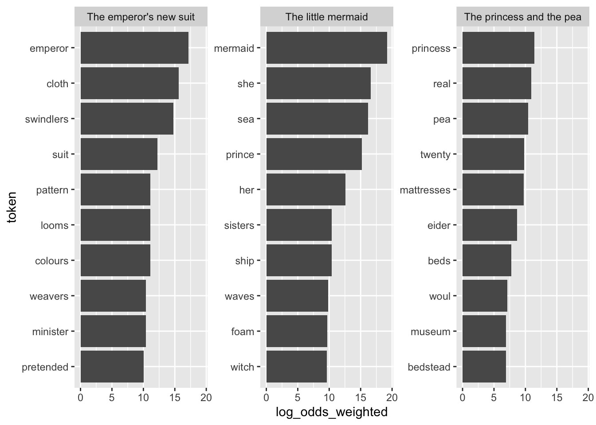
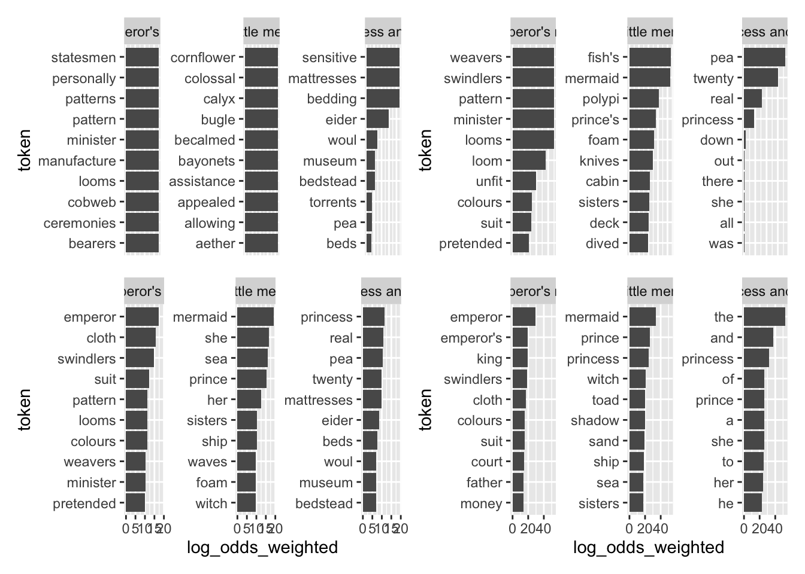

Chapter 4 “Fighting words”
A common task in the quantitative analysis of text is to determine how documents differ from each other concerning word usage. This is usually achieved by identifying words that are particular for one document but not for another. These words are referred to by Monroe, Colaresi, and Quinn (2008) as fighting words or, by Grimmer, Roberts, and Stewart (2022), discriminating words. To use the techniques that will be presented today, an already existing organization of the documents is assumed.
In the following, I will present multiple methods according to which you can identify words that are related to different groups and can be used to distinguish them. I will present the methods and their implementation in R ordered from rather simple to more complicated. The order is inspired by Monroe, Colaresi, and Quinn (2008). The methods have in common that, at their heart, they determine how often a word appears in a group of documents. Thereafter, the “importance” of a word in distinguishing the groups is determined through several weighting procedures.
4.1 Counting words per document
The most simple approach to determine which words are more correlated to a certain group of documents is by merely counting them and determining their proportion in the document groups. For illustratory purposes, I use fairytales from H.C. Andersen which are contained in the hcandersenr package.
library(tidyverse)
library(lubridate)##
## Attaching package: 'lubridate'## The following objects are masked from 'package:base':
##
## date, intersect, setdiff, unionlibrary(tidytext)
fairytales <- hcandersenr::hcandersen_en %>%
filter(book %in% c("The princess and the pea",
"The little mermaid",
"The emperor's new suit"))
fairytales_tidy <- fairytales %>%
unnest_tokens(output = token, input = text)4.1.1 Naive approach: raw counts
For a first, naive analysis, I can merely count the times the terms appear in the texts. Since the text is in tidytext format, I can do so using means from traditional tidyverse packages. I will then visualize the results with a bar plot.
fairytales_top10 <- fairytales_tidy %>%
group_by(book) %>%
count(token) %>%
slice_max(n, n = 10)fairytales_top10 %>%
ggplot() +
geom_col(aes(x = n, y = reorder_within(token, n, book))) +
scale_y_reordered() +
labs(y = "token") +
facet_wrap(vars(book), scales = "free") +
theme(strip.text.x = element_blank())
It is quite hard to draw inferences on which plot belongs to which book since the plots are crowded with stopwords. However, there are pre-made stopword lists I can harness to remove the noise and perhaps catch a bit more signal for determining the books.
library(stopwords)
fairytales_top10_nostop <- fairytales_tidy %>%
anti_join(get_stopwords(), by = c("token" = "word")) %>%
group_by(book) %>%
count(token) %>%
slice_max(n, n = 10, with_ties = FALSE)fairytales_top10_nostop %>%
ggplot() +
geom_col(aes(x = n, y = reorder_within(token, n, book))) +
scale_y_reordered() +
labs(y = "token") +
facet_wrap(vars(book), scales = "free") +
scale_x_continuous(breaks = scales::pretty_breaks()) +
theme(strip.text.x = element_blank())
This already looks quite nice, it is quite easy to see which plot belongs to the respective book.
4.1.2 TF-IDF
A better explanation for words that are particular to a group of documents is the ones that appear often in one group but rarely in the other one(s). So far, the measure of term frequency only accounts for how often terms are used in the respective document. I can take into account how often it appears in other documents by including the inverse document frequency. The resulting measure is called tf-idf and describes “the frequency of a term adjusted for how rarely it is used.” (Silge and Robinson 2016: 31) If a term is rarely used overall but appears comparably often in a singular document, it might be safe to assume that it plays a bigger role in that document.
The tf-idf of a word in a document is commonly3 calculated as follows:
\[w_{i,j}=tf_{i,j}\times ln(\frac{N}{df_{i}})\]
–> \(tf_{i,j}\): number of occurrences of term \(i\) in document \(j\)
–> \(df_{i}\): number of documents containing \(i\)
–> \(N\): total number of documents
Note that the \(ln\) is included so that words that appear in all documents – and do therefore not have discriminatory power – will automatically get a value of 0. This is because \(ln(1) = 0\). On the other hand, if a term appears in, say, 4 out of 20 documents, its idf is \(ln(20/4) = ln(5) = 1.6\).
The tidytext package provides a neat implementation for calculating the tf-idf called bind_tfidf(). It takes as input the columns containing the term, the document, and the document-term counts n.
fairytales_top10_tfidf <- fairytales_tidy %>%
group_by(book) %>%
count(token) %>%
bind_tf_idf(token, book, n) %>%
slice_max(tf_idf, n = 10)fairytales_top10_tfidf %>%
ggplot() +
geom_col(aes(x = tf_idf, y = reorder_within(token, tf_idf, book))) +
scale_y_reordered() +
labs(y = "token") +
facet_wrap(vars(book), scales = "free") +
theme(strip.text.x = element_blank(),
axis.title.x = element_blank(),
axis.text.x = element_blank(),
axis.ticks.x = element_blank())
Pretty good already! All the fairytales can be clearly identified. A problem with this representation is that I cannot straightforwardly interpret the x-axis values (they can be removed by uncommenting the last three lines). A way to mitigate this is using odds.
Another shortcoming becomes visible when I take the terms with the highest TF-IDF as compared to all other fairytales.
tfidf_vs_full <- hcandersenr::hcandersen_en %>%
unnest_tokens(output = token, input = text) %>%
count(token, book) %>%
bind_tf_idf(book, token, n) %>%
filter(book %in% c("The princess and the pea",
"The little mermaid",
"The emperor's new suit"))
plot_tf_idf <- function(df, group_var){
df %>%
group_by({{ group_var }}) %>%
slice_max(tf_idf, n = 10, with_ties = FALSE) %>%
ggplot() +
geom_col(aes(x = tf_idf, y = reorder_within(token, tf_idf, {{ group_var }}))) +
scale_y_reordered() +
labs(y = "token") +
facet_wrap(vars({{ group_var }}), scales = "free") +
#theme(strip.text.x = element_blank()) +
theme(axis.title.x=element_blank(),
axis.text.x=element_blank(),
axis.ticks.x=element_blank())
}
plot_tf_idf(tfidf_vs_full, book)
The tokens are far too specific to make any sense. Introducing a lower threshold (i.e., limiting the analysis to terms that appear at least x times in the document) might mitigate that. Yet, this threshold is of course arbitrary.
tfidf_vs_full %>%
group_by(token) %>%
filter(n > 3) %>%
ungroup() %>%
plot_tf_idf(book)
This looks a bit better already, yet the threshold is of course arbitrary and not generalizable. Choosing a higher threshold will take away more specific terms, lower thresholds might make the results overly specific.
4.1.3 Odds
Another approach to tackle the question of which words distinguish the documents nicely is to think about it as “which words have the highest odds of appearing in one document?” These words shall then be the ones that are presumably very descriptive for the document.
The formula for the odds of word \(w\) appearing in document \(i\) looks as follows:
\[O_{iw} = \frac{f_{iw}}{1-f_{iw}}\] \(f_{iw}\) stands for the share a word takes within a document.
By logging this measure I ensure that the values are comparable across words and documents. A quick example would be the word “and” which appears 14 times in “The princess and the pea” (out of 382 words). Hence, the odds of a word being “and” in this document are 14 to 382, the total number of words in the document, minus 14; \(O_{and, j}\frac{14/382}{1-14/382}\) which is 0.0380435. The odds of “and” not being the word are 368 to 14, \(\frac{368/382}{1-368/382}\) – 26.2857143. However, if we log both values, they become symmetric – \(ln(0.03804348) = -3.27\) and \(ln(26.28571) = 3.27\).
If I were to compare the usage of a word \(w\) between documents \(i\) and \(j\), I can use the log odds ratio.
\[log \frac{O_{iw}}{O_{jw}} = log(\frac{\frac{f_{iw}}{1-f_{iw}}}{\frac{f_{jw}}{1-f_{jw}}}) = log(\frac{f_{iw}}{1-f_{iw}})-log(\frac{f_{jw}}{1-f_{jw}})\]
In R we can use the tidylo package to calculate them. The function bind_log_odds() works analogously to bind_tf_idf(). For the basic implementation of the log-odds approach, I set uninformative = TRUE. In technical terms, this means that I use an uninformative prior for the respective tokens. This implies that it does not account for the basic usage of the respective tokens in a background corpus that we have. Therefore, some common words might be overstressed just because they are more common in the text at hand. By default, the function returns a tibble containing the feature (here: token), the set (here: book), the number of appearances the feature makes in a respective set, as well as the weighted log-odds of the feature making an appearance in the set. Weighted here means z-standardized so that we can compare it across sets (documents). Interpretation of the absolute values, however, is not straightforward. Positive log odds imply that the group is more likely to use the word as compared to others.
#install.packages("tidylo")
library(tidylo)
log_odds_uninformative <- fairytales_tidy %>%
count(token, book) %>%
bind_log_odds(book, token, n, uninformative = TRUE, unweighted = TRUE)
plot_log_odds <- function(df, x_var = log_odds_weighted, group_var){
df %>%
group_by({{ group_var }}) %>%
slice_max({{ x_var }}, n = 10, with_ties = FALSE) %>%
mutate(token = reorder_within(token, {{ x_var }}, {{ group_var }})) %>%
ggplot() +
geom_col(aes(x = {{ x_var }}, y = token)) +
scale_y_reordered() +
labs(y = "token") +
facet_wrap(vars({{ group_var }}), scales = "free_y") #+
#theme(strip.text.x = element_blank())
}
log_odds_uninformative %>% plot_log_odds(group_var = book)
Right now, there are still a bunch of uninformative words in the plot (e.g., did, is, you, of, etc.). I can specify the usage of an informative prior. This prior accounts for general usage of the word and shrinks the counts toward how often the word appears in the background corpus. Therefore, I can also see differences in common words (something that could not be done with TF-IDF as their TF-IDF score will become 0 if they appear in every document).
log_odds_informative <- fairytales_tidy %>%
count(token, book) %>%
bind_log_odds(book, token, n, uninformative = FALSE, unweighted = TRUE)
plot_log_odds(log_odds_informative, group_var = book)
This will look different, however, when I calculate the measure for the full corpus of H. C. Andersen fairytales and then just use the ones in question.
log_odds_vs_full_informative <- hcandersenr::hcandersen_en %>%
unnest_tokens(output = token, input = text) %>%
count(token, book) %>%
bind_log_odds(book, token, n, uninformative = FALSE, unweighted = TRUE) %>%
filter(book %in% c("The princess and the pea",
"The little mermaid",
"The emperor's new suit"))
log_odds_vs_full_uninformative <- hcandersenr::hcandersen_en %>%
unnest_tokens(output = token, input = text) %>%
count(token, book) %>%
bind_log_odds(book, token, n, uninformative = TRUE, unweighted = TRUE) %>%
filter(book %in% c("The princess and the pea",
"The little mermaid",
"The emperor's new suit"))
plot_log_odds(log_odds_vs_full_informative, group_var = book)
plot_log_odds(log_odds_vs_full_uninformative, group_var = book)
This all looks quite specific and good, except for “The princess and the pea.”
Let’s wrap it up by comparing how different methods lead to different results.
library(patchwork)
wrap_plots(
tfidf_vs_full %>% plot_tf_idf(book),
tfidf_vs_full %>% filter(n > 3) %>% plot_tf_idf(book),
log_odds_vs_full_uninformative %>% plot_log_odds(group_var = book),
log_odds_vs_full_informative %>% plot_log_odds(group_var = book)
)
4.2 Further links
- Chapter on TF-IDF inTidy text mining with R.
- Introduction to tidylo.
- More on the rationale behind log-odds by Qiushi Yan
4.3 Exercise
The following code was used to download the latest 200 tweets of the members of the U.S. Congress.
library(tidyverse)
library(rvest)
library(rtweet)
library(lubridate)
rep_overview <- read_html("https://pressgallery.house.gov/member-data/members-official-twitter-handles") %>%
html_table() %>%
pluck(1)
colnames(rep_overview) <- rep_overview[1, ]
rep_overview <- slice(rep_overview, -1) %>%
janitor::clean_names() %>%
mutate(twitter_handle = str_remove(twitter_handle, "\\@"))
tweet_overview_us_rep <- map(
rep_overview$twitter_handle,
~{
Sys.sleep(5)
get_timeline(.x, n = 200)
}
)
tweets_relevant <- tweet_overview_us_rep %>% bind_rows() %>%
mutate(date = date(created_at)) %>%
filter(date > ymd("2022-05-01"))
tweets_2022 <- tweet_overview_us_rep %>% bind_rows() %>%
mutate(date = date(created_at)) %>%
filter(date >= ymd("2022-01-01"))The tweets can be found in the file congress_tweets_2022.csv.
On May 2, 2022, documents from the supreme court were leaked that show an upcoming decision on one of the major hot-button issues in American politics. Which topic? Can you figure that out from the data? (Hints: Create two groups with Tweets that were posted before and on/after May 2nd; don’t use the full date but reduce them to say April 20 to May 1 for group “before”; perhaps remove hashtags and infrequent words (words with n <= 15)?; use some of the methods outlined above (note that for log-odds, you need to remove all Inf values using
filter(is.finite(log_odds_weighted))before plotting); try to identify the issue)As we are talking hot-button issue here, how did the language Republican and Democratic House members used differ? [You can get an overview of the name, the Twitter handle, and the party leaning of the House members by running the following code (note that you may have to install
rvestandjanitorfirst).]
library(tidyverse)
library(rvest)##
## Attaching package: 'rvest'## The following object is masked from 'package:readr':
##
## guess_encodinglibrary(janitor)##
## Attaching package: 'janitor'## The following objects are masked from 'package:stats':
##
## chisq.test, fisher.testrep_overview <- read_html("https://pressgallery.house.gov/member-data/members-official-twitter-handles") %>%
html_table() %>%
pluck(1)
colnames(rep_overview) <- rep_overview[1, ]
rep_overview <- slice(rep_overview, -1) %>%
clean_names() %>%
mutate(twitter_handle = str_remove(twitter_handle, "\\@"))Try to select tweets that are about the issue at hand (i.e., abortion and the leak). Come up with keywords that help you select all relevant tweets. Note that due to the issue and the language concerning it being so partisan, your choice might skew your sample. Focus on tweets posted after the leak. You can check whether you see abortion-related tweets spike using the following code:
tweets_abortion %>% count(date) %>% ggplot() + geom_line(aes(date, n))Group your resulting data according to party affiliation. Are there party-specific language differences you can uncover using the methods above? Try both
informative = TRUEandinformative = FALSE.
Solution. Click to expand!
tweets <- read_csv("data/congress_tweets_2022.csv") %>%
mutate(date_group = case_when(date >= ymd("2022-05-02") ~ "after",
between(date, ymd("2022-04-15"), ymd("2022-05-01")) ~ "before"))
tf_idf_min15 <- tweets %>%
#mutate(text = str_remove_all(text, "\\#.* ")) %>%
drop_na(date_group) %>%
unnest_tokens(token, text) %>%
count(token, date_group) %>%
filter(n > 15) %>%
bind_tf_idf(token, date_group, n)
tf_idf_min15 %>% plot_tf_idf(date_group)
log_odds <- tweets %>%
mutate(text = str_remove_all(text, "\\#.* ")) %>%
unnest_tokens(token, text) %>%
count(token, date_group) %>%
bind_log_odds(token, date_group, n) %>%
drop_na(date_group)
log_odds %>% filter(is.finite(log_odds_weighted) & n > 20) %>% plot_log_odds(group_var = date_group)
#--> TF-IDF performed way better
tweets_w_party <- tweets %>%
left_join(rep_overview %>% select(twitter_handle, party))
keywords <- c("abortion", "prolife", " roe ", "wade ", "roevswade", "baby", "fetus", "womb", "prochoice", "leak")
tweets_abortion <- tweets_w_party %>%
filter(str_detect(text, pattern = str_c(keywords, collapse = "|")) &
party %in% c("D", "R"))
tweets_abortion %>%
count(party)
tweets_abortion %>%
count(date) %>%
ggplot() +
geom_line(aes(date, n))
tweets_abortion_new <- tweets_w_party %>%
filter(str_detect(text, pattern = str_c(keywords, collapse = "|")) &
date > ymd("2022-05-01") &
party %in% c("D", "R"))
tweets_abortion_new %>%
count(party)
tf_idf_abortion <- tweets_abortion_new %>%
#mutate(text = str_remove_all(text, "\\#.* ")) %>%
filter(party %in% c("D", "R")) %>%
unnest_tokens(token, text) %>%
count(token, party) %>%
bind_tf_idf(token, party, n)
tf_idf_abortion %>% plot_tf_idf(party)
log_odds_abortion <- tweets_abortion_new %>%
mutate(text = str_remove_all(text, "https.* ")) %>%
filter(party %in% c("D", "R")) %>%
unnest_tokens(token, text) %>%
filter(!str_detect(token, "[:digit:]")) %>%
count(token, party) %>%
bind_log_odds(token, party, n, uninformative = TRUE)
log_odds_abortion %>% filter(is.finite(log_odds_weighted)) %>%
plot_log_odds(group_var = party)